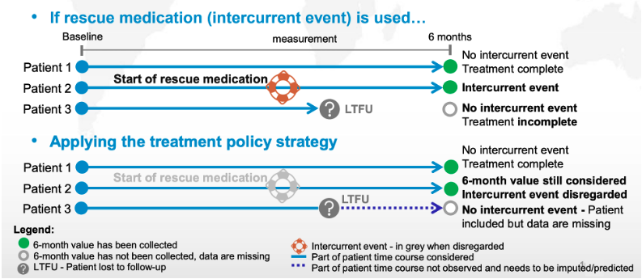
1. The General Introduction of Estimand Framework
The general introduction of estimand framework includes four parts:
Trial Objective
Estimand
Main Estimator
Main Estimate
An estimand is a precise description of the treatment effect reflecting the clinical question posed by a given clinical trial objective, via specifying five attributes: Population, Treatment, Endpoint, Population-level Summary, Intercurrent Events.
The intercurrent event is an event that occurs after treatment initiation and affects either the interpretation or existence of the measurements associated with the clinical outcome.
There are five strategies (page 101-118 of ICH E9) to deal with intercurrent events: treatment policy, hypothetical, composite variable, while on treatment, principal stratum.
2. The Five Strategies
2.1 Treatment Policy
The treatment policy strategy includes all post-randomization data, regardless of the intercurrent events. In this approach, the primary analysis treats the occurrence of intercurrent events as part of the real-world scenario. Thus, data is collected and analyzed as if all patients followed the initial treatment assignment, irrespective of deviations. (Intention to treat - ITT)
Example: A clinical trial where patients switch to a different medication due to adverse effects, but all data (pre- and post-switch) are included in the primary analysis.
2.2 Hypothetical
The hypothetical strategy considers what the outcome would have been if the intercurrent event had not occurred. This strategy relies on assumptions to model the data based on a scenario where patients had continued as initially intended, disregarding the actual intercurrent events.
Example: Estimating the effect of a drug assuming that all patients remained on the assigned treatment without any dropouts or additional medications.
The hypothetical scenario should consider reasonable situations, e.g. a scenario where a toxic medicine is considered to be non-toxic is not usually relevant for decision making.
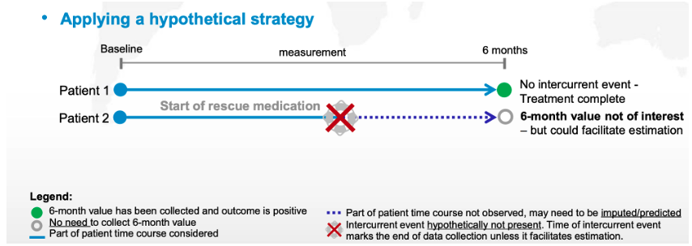
2.3 Composite Variable
In the composite variable strategy, the intercurrent event is integrated into the outcome itself, redefining it as part of a combined endpoint. This method allows for a new outcome that includes both the clinical endpoint and the intercurrent event, allowing analyses to capture their joint effect.
Example: For a heart disease trial, combining hospitalization and mortality as a composite endpoint, rather than separating them, captures the total adverse outcomes.
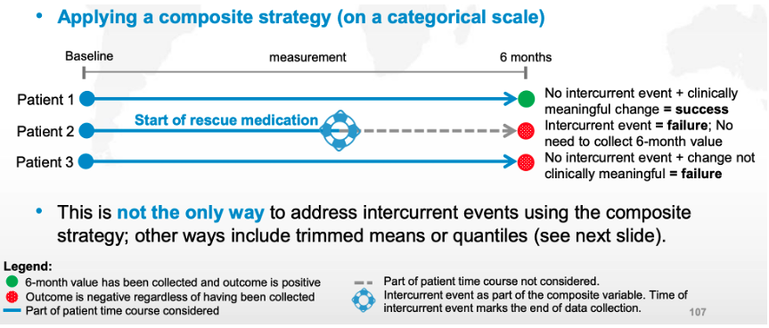
2.4 While-on-Treatment
The while-on-treatment strategy (also known as the on-treatment strategy) restricts analysis to data collected up until the occurrence of the intercurrent event. Once the intercurrent event occurs, further data is excluded from the analysis. This approach only considers the efficacy of the treatment while patients are actively taking it.
Example: Including data from patients only while they adhere to the medication and excluding data collected after discontinuation or switch to another treatment.
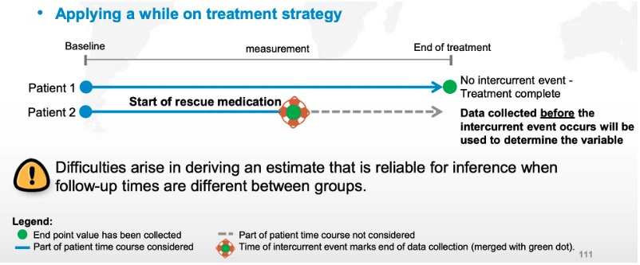
2.5 Principal Stratum
The principal stratum strategy analyzes only a specific subset of patients defined by their response to the intercurrent event, such as those who would not experience the event regardless of the treatment they received. This strategy requires assumptions about which patients would fall into this subset and generally involves a more complex statistical model.
Example: In a study where some patients are likely to need additional therapy, the analysis might focus only on those who would not require additional therapy regardless of the treatment arm they are in.
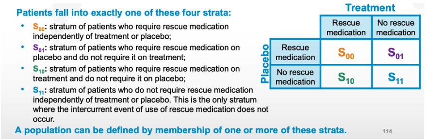
3. An Simple Example
Primary Estimand: to assess the outcome of new medicine (treatment group) as compared to old medicine (control group) in defined population who complete the treatment regimen.
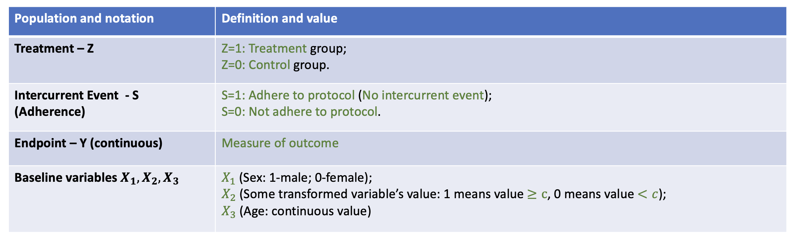
4. Principal Stratification Framework
4.1. Principal Strata
Under the potential outcome framework (Rubin, 1974), each subject has potential outcomes \(S(z)\) and \(Y(z)\), where \(z=0,1\). Frangakis and Rubin (2002) defined the principal stratification variable, \(U=S(1)S(0)\), where \(S(0),S(1)\in\{0,1\}\). Thus, there are four principal strata:
\(U=00\): Never-adherence
\(U=10\): Treatment-benefit adherence
\(U=01\): Control-benefit adherence
\(U=11\): Always-adherence
Take \(U=S(1)S(0) = 00\) Never-adherence as an example:
\(S(1) = 0\): when subject is assigned to the treatment group, she/he will not adhere to the protocol.
\(S(0) = 0\): when subject is assigned to the control group, she/he will not adhere to the protocol.
Below we show the relationship between principal strata and the observed strata.
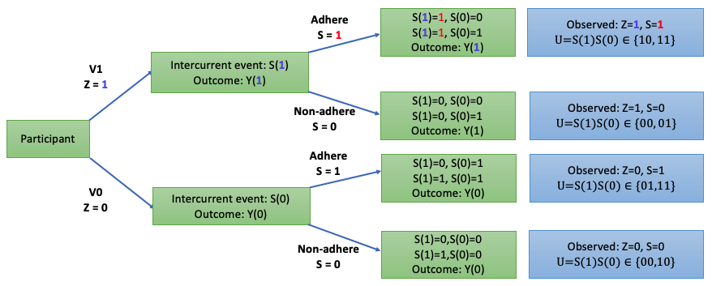
4.2. Principal Causal Effects (PCEs)
The causal estimand here is defined as principal causal effects (PCEs): \[\tau_{U=S(1)S(0)} = E\{Y(1) - Y(0) | U = S(1)S(0)\},\quad S(1)S(0) = 00, 10, 11, 01.\]
In Section 2’s example, our interested parameter is PCE in Always-adherence strata: \[\tau_{11} = \tau_{U=11} = E\{Y(1) - Y(0)| U= 11\}.\]
4.3. Per-protocol Method
Here we also list the target estimand in Per-protocol method using our notation: \[\tau_{pp} = E(Y|Z=1,S=1) - E(Y|Z=0,S=1)\]
In Section 2’s example, the interested parameter in the Per-protocol method corresponding to PCE in Always-adherence strata is: \[\tau_{11} = \tau_{U=11} = E\{Y(1) - Y(0)| U= 11\}.\]
However, \(\tau_{11}\) is defined on the potential principal strata \(U=S(1)S(0) = 11\), while \(\tau_{pp}\) is defined on the observed strata \((Z,S)\).
Here we can use a simple table to show the relationship between principal strata abd observed strata:
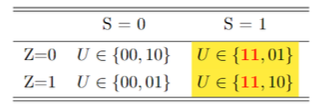
Thus, if we use the Per-protocol method to estimate \(\tau_{11}\), \(\widehat{\tau}_{pp}\) may not be an consistent estimator for \(\tau_{11}\) since it will be confounded by two other principal strata \(U = 01\) and \(U=10\).
5. Principal Stratification Estimation Methods
5.1. Most Recent Principal Stratification Methods:
Here we first list the most recent principal stratification methods and provide one plot to show the relationship among these methods.
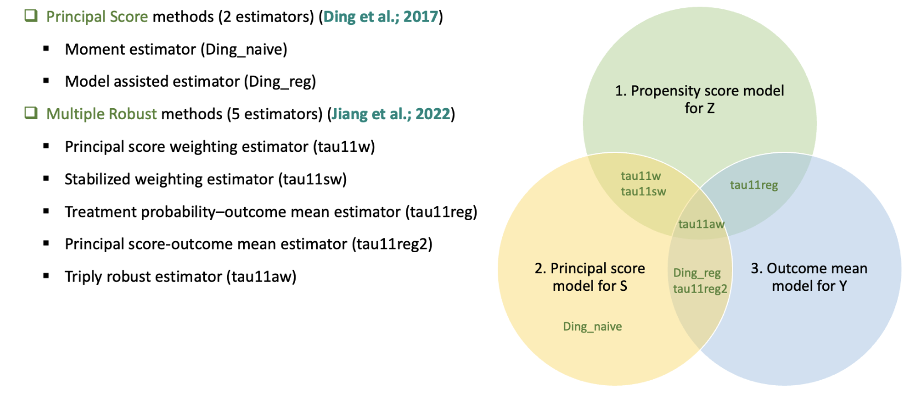
5.2 Identification Assumptions
Assumption 1: SUTVA (Stable Unit Treatment Value Assumption): There is no interference and no hidden variations of treatment.
- This assumption hold in the completely randomized trial.
Assumption 2: Treatment Ignorability: \(Z\perp \{S(0), S(1), Y(0), Y(1)\}| \boldsymbol{X}\).
- This assumption hold in the completely randomized trial.
Assumption 3: Monotonicity: \(S(1)\geq S(0)\).
- This rules out stratum U=01 (Control-benefit adherence).
- This means: when participants are assigned to the treatment group, they are more likely to adhere to protocol comparing with when participants are assigned to the control group.
- Under Assumption 3, the relationship table between the principal strata and the observed strata changed.
- Now \(\tau_{pp}\) is still confounded by the principal strata \(U=10\).
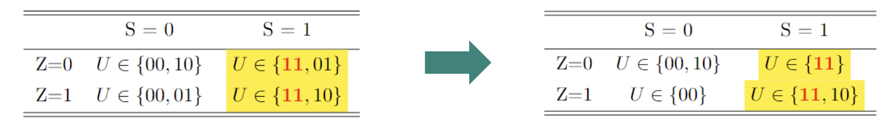
Assumption 4: Principal Ignorability: \[E\{Y(1) | U=11, \boldsymbol{X}\} = E\{Y(1) | U=10, \boldsymbol{X}\} \] \[E\{Y(0) | U=00, \boldsymbol{X}\} = E\{Y(0) | U=10, \boldsymbol{X}\} \]
- This requires that the expectations of the potential outcome do not vary across some principal strata U conditional on the covariates.
- Take the first formula as an example. Under Assumption 1-3, the first formula is equivalent to \[\begin{align*} Z=1,S=1:\quad & E\{Y(1)| U = 11, Z=1,S=1, \boldsymbol{X}\} \\ = & E\{Y(1)| U = 10, Z=1, S=1, \boldsymbol{X}\}\\ = & E\{Y | Z=1,S=1,\boldsymbol{X}\}. \end{align*}\]
- This assumption help build an bridge to connect observed data with potential outcome. Thus, we can use observed data to estimate the principal causal effect.
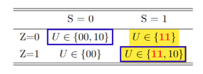
5.3 Principal Score Methods (Ding et al.; 2017)
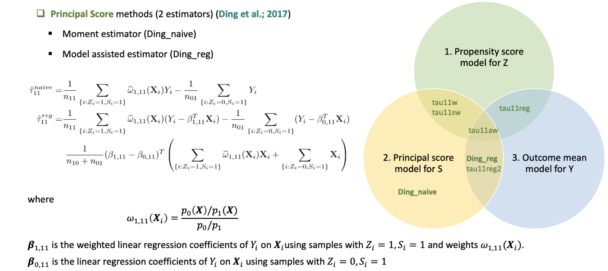
5.4 Multiple Robust Methods (Jiang et al.; 2017)
First, we list two estimators that rely on propensity score model for Z and principal score model for S.
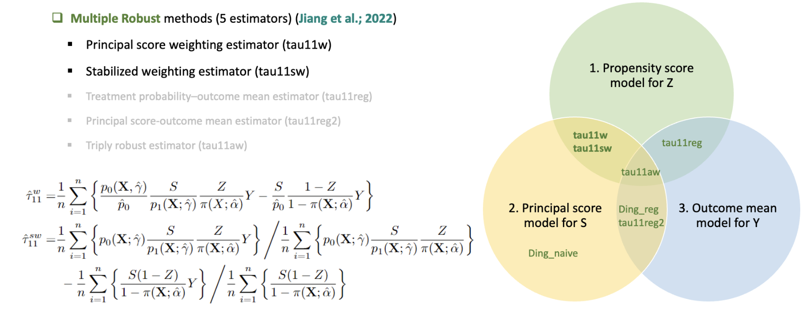
Next, we introduce two estimators that rely on outcome mean model for Y, where also relies on propensity score model for Z and relies on principal score model for S.
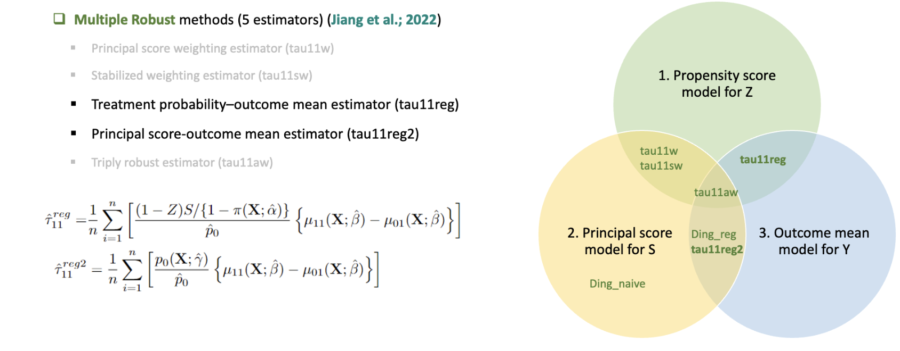
Finally, we present the triply robust estimator, which relies on all three models: propensity score model for Z, principal score model for S and outcome mean mdoel for Y.
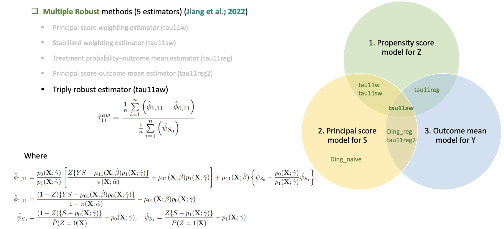
6. Simple Simulation
In this section, we use an simple simulation to show the codes for these principal stratification estimation methods and the Per-protocol method.
6.1 Setting
We follow the setting in Section 2.1, where we have three baseline variables:
\(X_1\): Sex, binary, Bernoulli distribution with probability 0.5 as 1 (female)
\(X_2\): Some transformed variable, binary, Bernoulli distribution with probability 0.8 as 1
\(X_3\): Age, continuous, normal distribution with mean 50 and variance 8
In addition, we use the logistic model to generate the intercurrent event:
\[P(S=1|Z, \boldsymbol{X}) = logistc(-1 + 0.15Z +0.6X_1 + 0.8 X_2 + 0.05*X_3 )\] and we use the linear regression model to generate the observed outcome:
\[ Y = 0.5 - 0.7Z + 0.2S - 0.1X_1 +0.2 X_2 + 0.1X_3 + 0.1X_3Z + 0.1 X_3 S + \epsilon\] where \(\epsilon\sim N(0, \sigma^2 = 0.6^2Z + 0.65^2(1-Z))\).
########################################
# Basic functions for generating simulated data
########################################
{
gen_Z <- function(num = 1){
return(rbinom(1, 1, prob = 1/2))
}
gen_X <- function(num = 1){
res <- as.matrix(c(1, rnorm(4, mean = 0, sd = 1), rbinom(1, size = 1, prob = 1/2)), ncol = 1)
return(res)
}
multi_logit_ss <- function(Xi,
theta_logit_ss,
theta_logit_s1s1,
theta_logit_ss1){
Xi <- t(Xi)
res_ss <- exp(theta_logit_ss %*% Xi) / (exp(theta_logit_ss %*% Xi) +
exp(theta_logit_s1s1 %*% Xi) +
exp(theta_logit_ss1 %*% Xi))
return(res_ss)
}
multi_logit_s1s1 <- function(Xi,
theta_logit_ss,
theta_logit_s1s1,
theta_logit_ss1){
Xi <- t(Xi)
res_s1s1 <- exp(theta_logit_s1s1 %*% Xi) / (exp(theta_logit_ss %*% Xi) +
exp(theta_logit_s1s1 %*% Xi) +
exp(theta_logit_ss1 %*% Xi))
return(res_s1s1)
}
multi_logit_ss1 <- function(Xi,
theta_logit_ss,
theta_logit_s1s1,
theta_logit_ss1){
Xi <- t(Xi)
res_ss1 <- exp(theta_logit_ss1 %*% Xi) / (exp(theta_logit_ss %*% Xi) +
exp(theta_logit_s1s1 %*% Xi) +
exp(theta_logit_ss1 %*% Xi))
return(res_ss1)
}
prob_U <- function(Xi,
theta_logit_ss,
theta_logit_s1s1,
theta_logit_ss1){
Xi <- t(Xi)
prob <- c(multi_logit_ss(Xi,
theta_logit_ss,
theta_logit_s1s1,
theta_logit_ss1),
multi_logit_s1s1(Xi,
theta_logit_ss,
theta_logit_s1s1,
theta_logit_ss1),
multi_logit_ss1(Xi,
theta_logit_ss,
theta_logit_s1s1,
theta_logit_ss1)
)
return(prob)
}
sample_strata <- function(prob){
return(sample(c(1,2,3), size = 1, prob = prob))
}
gen_S <- function(Z, strata){
if(strata == 1){ # always-taker
return(c(1))
}else if(strata == 2){ # never-taker
return(c(0))
}else{ # complier
return(Z)
}
}
gen_Y0 <- function(strata, X){
mu_Y0 <- sum(X[2:6]) + 1*(strata == 1) + 1 # strata = 1 - always-taker
res <- rnorm(1, mean = mu_Y0, sd = 1)
return(res)
}
gen_Y1 <- function(strata, X){
mu_Y1 <- sum(X[2:6]) - 1*(strata == 2) + 4 # strata = 2 - never-taker
res <- rnorm(1, mean = mu_Y1, sd = 1)
return(res)
}
gen_Y <- function(# strata,
Z, Y0, Y1){
# if(strata == 1){ # always-taker
# return(c(Y1))
# }else if(strata == 2){ # never-taker
# return(c(Y0))
# }else{ # complier
# return(Z*Y1 + (1-Z)*Y0)
# }
return(Z*Y1 + (1-Z)*Y0)
}
}6.2 Estimation
Here we show R codes for doing simulation
Reference
- D. B. Rubin. Estimating causal effects of treatments in randomized and nonrandomized studies. J Educ Psychol, 66(5): 688–701, 1974.
- C.E. Frangakis and D. B. Rubin. Principal stratification in causal inference. Biometrics, 58(1):21–29, 2002.
- P. Ding and J. Lu. Principal stratification analysis using principal scores. Journal of the Royal Statistical Society Series B: Statistical Methodology, 79(3):757–777, 2017.
- Z. Jiang, S. Yang, and P. Ding. Multiply robust estimation of causal effects under principal ignorability. Journal of the Royal Statistical Society Series B: Statistical Methodology, 84(4):1423–1445, 2022.